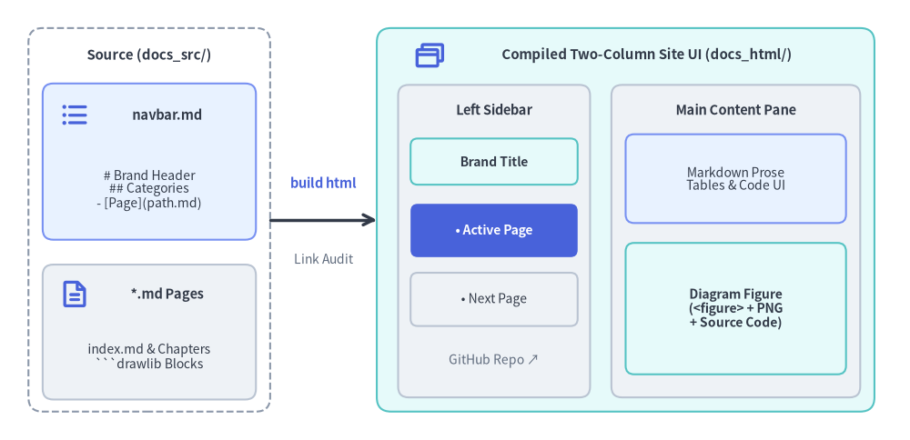
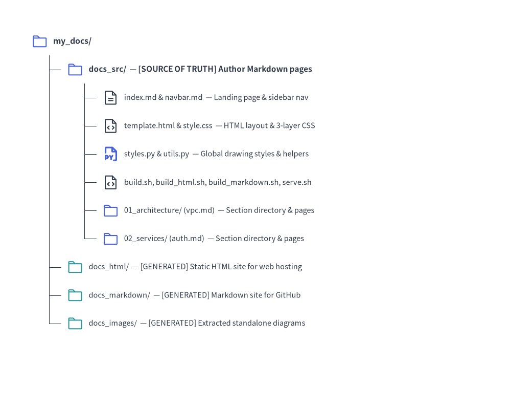

Site Project Guide (drawlib init site)
The site starter template builds a responsive multi-page technical documentation website with hierarchical sidebar navigation, mobile-responsive layout, syntax highlighting, and dual publishing to static HTML and GitHub-ready Markdown.
Drawlib compiles docs_src/navbar.md and your Markdown pages into a two-column documentation portal with strict build-time link validation:

Source Code
from drawlib.canvas import save, setup
from drawlib.icons import phosphor
from drawlib.lines import line
from drawlib.shapes import rectangle
from drawlib.styles import Styles
from drawlib.text import text
setup(width=128, height=62)
# Left: Source directory container
rectangle((21, 31), width=34, height=54, style=Styles.MutedDashed.patch(shape_r=2.0))
text((21, 54.2), "Source (docs_src/)", style=Styles.DarkBold.patch(text_size=10.8))
rectangle((21, 39.2), width=30, height=22, style=Styles.PrimaryNeutral.patch(shape_r=1.5))
phosphor.list_bullets((10.5, 45.8), width=4.4, style=Styles.PrimaryBold)
text((23.5, 45.8), "navbar.md", style=Styles.DarkBold.patch(text_size=10.5))
text((21, 35.2), "# Brand Header\n## Categories\n- [Page](path.md)", style=Styles.Dark.patch(text_size=10.0))
rectangle((21, 15.2), width=30, height=19, style=Styles.Neutral.patch(shape_r=1.5))
phosphor.file_text((10.5, 20.5), width=4.4, style=Styles.PrimaryBold)
text((23.5, 20.5), "*.md Pages", style=Styles.DarkBold.patch(text_size=10.5))
text((21, 11.8), "index.md & Chapters\n```drawlib Blocks", style=Styles.Dark.patch(text_size=10.0))
# Middle: Compiler step
line((38, 31), (53, 31), arrow_head="->", style=Styles.DarkBold)
text((45.5, 36.2), "build html", style=Styles.PrimaryBold.patch(text_size=10.5))
text((45.5, 25.5), "Link Audit", style=Styles.Muted.patch(text_size=10.0))
# Right: Compiled Two-Column Site UI (docs_html/)
rectangle((88, 31), width=70, height=54, style=Styles.SecondaryNeutral.patch(shape_r=2.0))
phosphor.browsers((60.5, 54.2), width=4.6, style=Styles.PrimaryBold)
text((91.0, 54.2), "Compiled Two-Column Site UI (docs_html/)", style=Styles.DarkBold.patch(text_size=10.8))
# Left Sticky Sidebar
rectangle((69.5, 28.0), width=27, height=44, style=Styles.Neutral.patch(shape_r=1.5))
text((69.5, 46.5), "Left Sidebar", style=Styles.DarkBold.patch(text_size=10.5))
rectangle(
(69.5, 39.2),
width=23.5,
height=6.5,
style=Styles.SecondaryNeutral.patch(shape_r=1.0),
text="Brand Title",
text_style=Styles.DarkBold.patch(text_size=10.0),
)
rectangle(
(69.5, 29.5),
width=23.5,
height=7.5,
style=Styles.PrimaryFlat.patch(shape_r=1.0),
text="• Active Page",
text_style=Styles.WhiteBold.patch(text_size=10.0),
)
rectangle(
(69.5, 19.8),
width=23.5,
height=7.5,
style=Styles.Neutral.patch(shape_r=1.0),
text="• Next Page",
text_style=Styles.Dark.patch(text_size=10.0),
)
text((69.5, 11.2), "GitHub Repo ↗", style=Styles.Muted.patch(text_size=10.0))
# Right Main Content Pane
rectangle((103.5, 28.0), width=35, height=44, style=Styles.Neutral.patch(shape_r=1.5))
text((103.5, 46.5), "Main Content Pane", style=Styles.DarkBold.patch(text_size=10.5))
rectangle(
(103.5, 36.8),
width=31,
height=12.5,
style=Styles.PrimaryNeutral.patch(shape_r=1.2),
text="Markdown Prose\nTables & Code UI",
text_style=Styles.Dark.patch(text_size=10.0),
)
rectangle(
(103.5, 18.5),
width=31,
height=18.5,
style=Styles.SecondaryNeutral.patch(shape_r=1.2),
text="Diagram Figure\n(<figure> + PNG\n+ Source Code)",
text_style=Styles.DarkBold.patch(text_size=10.0),
)
save()
1. Project Initialization
Scaffold a documentation website using drawlib init:
# Scaffold default 'docs_src/' in the current directory:
drawlib init site
# Or specify a custom target prefix (creates 'my_docs_src/', 'my_docs_html/', etc.):
drawlib init site my_docs --style google --lang en
2. Directory Layout & Architecture

Source Code
from drawlib.canvas import save, setup
from drawlib.icons import phosphor
from drawlib.smartarts import TreeNode
from drawlib.styles import Styles
setup(width=98, height=78)
TreeNode.register_drawing_item(
name="folder",
location="before",
padding_width=4.2,
function=phosphor.folder,
style=Styles.PrimaryFlat,
args={"width": 3.2},
)
TreeNode.register_drawing_item(
name="folder_out",
location="before",
padding_width=4.2,
function=phosphor.folder,
style=Styles.Secondary,
args={"width": 3.2},
)
TreeNode.register_drawing_item(
name="md",
location="before",
padding_width=4.2,
function=phosphor.file_text,
style=Styles.Dark,
args={"width": 3.2},
)
TreeNode.register_drawing_item(
name="py",
location="before",
padding_width=4.2,
function=phosphor.file_py,
style=Styles.PrimaryBold,
args={"width": 3.2},
)
TreeNode.register_drawing_item(
name="code",
location="before",
padding_width=4.2,
function=phosphor.file_code,
style=Styles.Dark,
args={"width": 3.2},
)
root = TreeNode(
"my_docs/",
text_style=Styles.DarkBold.patch(text_size=11.5),
line_style=Styles.DarkThin,
line_horizontal_margin=3.4,
line_horizontal_length=3.4,
line_vertical_margin=5.4,
).set_drawing_item("folder")
src = root.add(
"docs_src/ — [SOURCE OF TRUTH] Author Markdown pages",
text_style=Styles.DarkBold.patch(text_size=11.0),
).set_drawing_item("folder")
src.add(
"index.md & navbar.md — Landing page & sidebar nav",
text_style=Styles.Dark.patch(text_size=10.5),
).set_drawing_item("md")
src.add(
"template.html & style.css — HTML layout & 3-layer CSS",
text_style=Styles.Dark.patch(text_size=10.5),
).set_drawing_item("code")
src.add(
"styles.py & utils.py — Global drawing styles & helpers",
text_style=Styles.Dark.patch(text_size=10.5),
).set_drawing_item("py")
src.add(
"build.sh, build_html.sh, build_markdown.sh, serve.sh",
text_style=Styles.Dark.patch(text_size=10.5),
).set_drawing_item("code")
src.add(
"01_architecture/ (vpc.md) — Section directory & pages",
text_style=Styles.Dark.patch(text_size=10.5),
).set_drawing_item("folder")
src.add(
"02_services/ (auth.md) — Section directory & pages",
text_style=Styles.Dark.patch(text_size=10.5),
).set_drawing_item("folder")
root.add(
"docs_html/ — [GENERATED] Static HTML site for web hosting",
text_style=Styles.Dark.patch(text_size=10.5),
).set_drawing_item("folder_out")
root.add(
"docs_markdown/ — [GENERATED] Markdown site for GitHub",
text_style=Styles.Dark.patch(text_size=10.5),
).set_drawing_item("folder_out")
root.add(
"docs_images/ — [GENERATED] Extracted standalone diagrams",
text_style=Styles.Dark.patch(text_size=10.5),
).set_drawing_item("folder_out")
root.draw(xy=(6, 70))
save()
3. Sidebar Navigation (navbar.md)
The sidebar navigation structure is governed entirely by docs_src/navbar.md:
# Drawlib Documentation
- [Home](index.md)
## Core Infrastructure
- [VPC Architecture](01_architecture/vpc.md)
- [Storage Tier](01_architecture/storage.md)
## Microservices
- [Authentication Gateway](02_services/auth.md)
- [Payment Service](02_services/payments.md)
## External Resources
- [GitHub Repository](https://github.com/example/repo)
Authoring Rules:
- Brand Header (
# Title): The top level# Heading 1sets the brand title in the sidebar header. - Category Groupings (
## Category): Each## Heading 2defines a collapsible navigation category section. - Internal Document Links: Relative paths must point to existing Markdown files within
docs_src/. - External Links: URLs beginning with
http://orhttps://automatically open in a new tab (target="_blank") with an external link indicator. - Strict Build-Time Validation: If any linked document does not exist, the build immediately aborts with an error indicating the file and line number.
- Active Page Tracking: The currently viewed page is automatically highlighted (
.nav-item.active) with dynamic relative path resolution.
4. Static Asset Synchronization
Any static assets placed in docs_src/ (such as custom logos, sample data files, or images in _assets/) are recursively mirrored to docs_html/ and docs/, preserving folder hierarchies.
5. Building & Local Preview
Compile Site
./docs_src/build_html.sh # Compile HTML site (docs_html/)
./docs_src/build_markdown.sh # Compile Markdown site (docs_markdown/ or docs/)
./docs_src/build_image.sh # Extract standalone images (docs_images/)
./docs_src/build.sh # Run all builds sequentially
Local Preview Server & Link Audit
Start the local development server to preview pages:
uv run drawlib serve docs_html/
Before deploying to production, run a headless pre-flight audit:
uv run drawlib serve docs_html/ --check